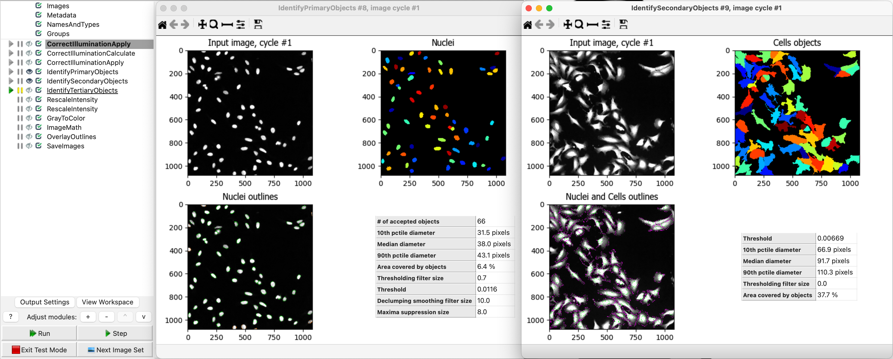
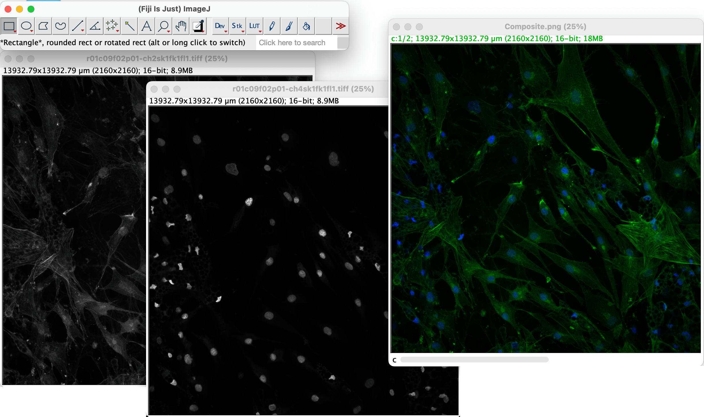
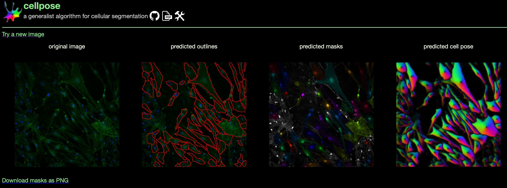
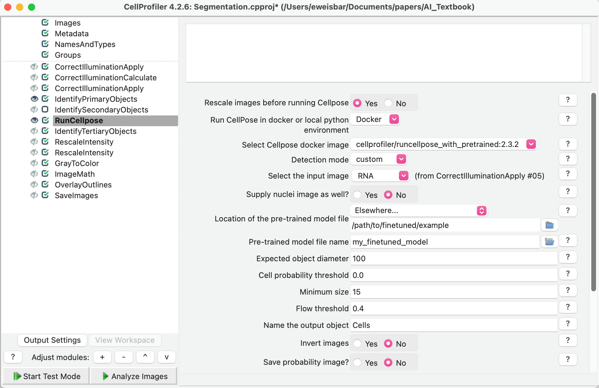
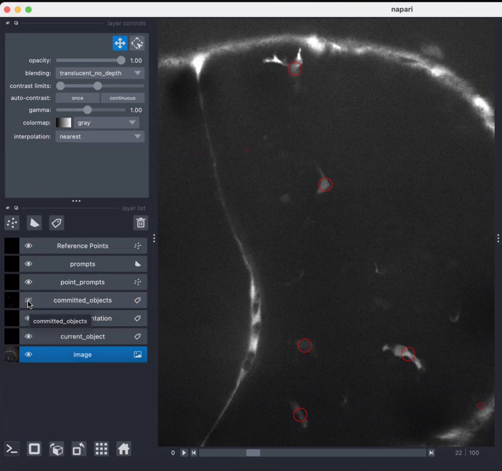
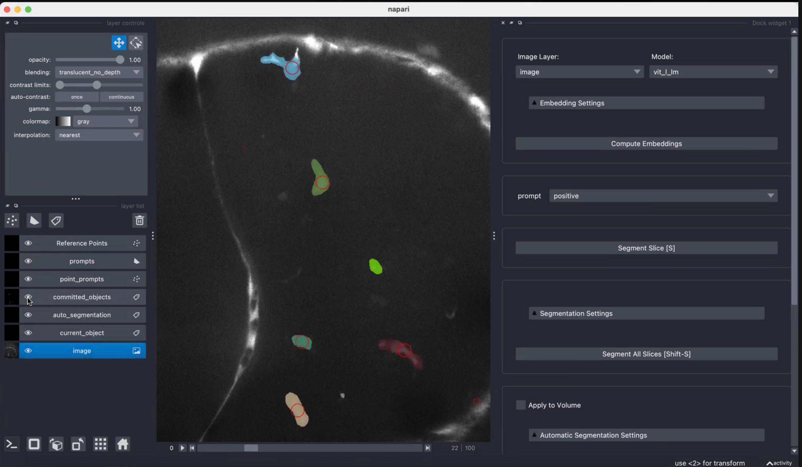
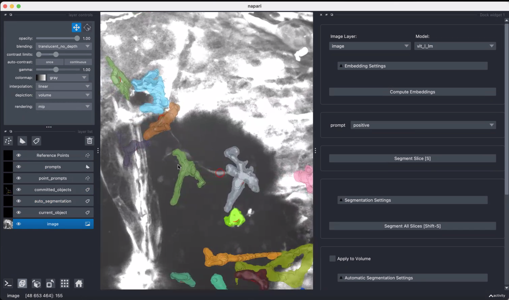
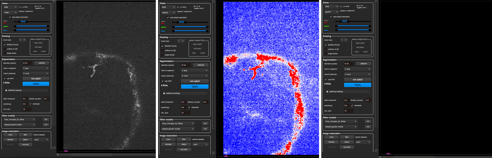
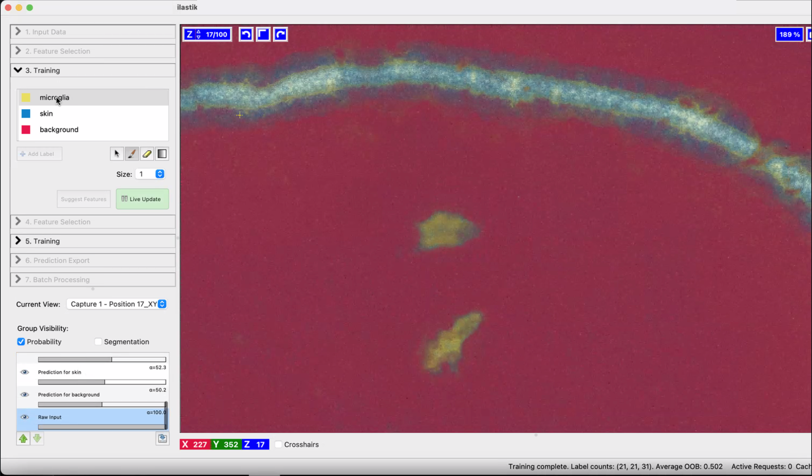

8 How do you select and find a tool?
Beth Cimini ![]()
Erin Weisbart
8.1 Introduction
We are now transitioning away from a discussion of hardware and into a discussion of software. And, more specifically, in this chapter we focus on image analysis, particularly the human thought processes and decisions needed for selecting what software to use and figuring out how to appropriately/best use it. Amazing technological developments have occured since the invention of microscopy almost half a millenium ago; Our current relationship to biological microscopy is profoundly shaped by the development of both quantitative microscopy and artificial intelligence in the mid-twentieth century. However, underlying the actual use of any technological development is a human (in our case, likely a biologist) selecting a specific technology to solve a specific problem.
In this chapter, we answer the questions of how do you find new-to-you AI models and how do you assess whether a new-to-you model or tool will meet your needs? In this chapter, we first help you assess your needs. We then introduce a way of categorizing tools and help you use your needs assessment to select the right tool category. We suggest several places where you can find AI models for bioimage analysis and describe how to assess how well tools in those locations meet your needs. Finally, we show a couple of case studies that fulfill different requirements.
8.2 Assessing your requirements for a tool (in a perfect world)
Before finding and selecting an AI tool, you first need to decide on the type of tool you need. Your tool selection will be influenced by a number of factors and you should first honestly answer the questions that follow.
8.2.1 Questions about your overall workflow:
- What is your desired output?
You must be able to concisely and specifically state what you would like output by your workflow. Do you need to segment objects? If so, do you need semantic, instance, or panoptic segmentation (Box 1)? (see Chapter 4 and Chapter 9 for more information) Do you need measurements and if so should they be made on individual objects or on images?
- How will you assess your outputs?
Will your assessment be qualitative or quantitative? Do you have ground truth? Do you have the expertise to assess output quality? (see ?sec-10 for more information) - What is your desired “quality” of your outputs?
Are you expecting outputs that approach ground truth or will “quick and dirty” be enough for you? - What does your ideal workflow look like?
Do you need all of the outputs to be made in a single software or are you comfortable using multiple softwares? If your images require preprocessing, does that need to happen in the same step? The same software?
8.2.2 Questions about your resources: time, expertise, and compute:
- How much time are you able to put into the task?
An honest assessment at the beginning of any project about the time you are willing to invest is critical. If you are in a rush, you’ll probably want to select a method that is already familiar or best matches your existing competencies.
- What is your priority?
Determining what your priority is goes hand in hand with assessing the amount of time you can put into your task. Perhaps you’re in a time crunch and speed is the most important consideration for you. Perhaps you have a specific quality control (QC) metric and you need the tool that will give you the outputs that optimize this metric. Perhaps you’ve always wanted to gain experience with a particular class of tool, so you want to figure out if this is the right use case for trying it.
- What is your level of computational domain expertise and comfort?
If you don’t have a high level of computational comfort, do you have the time and motivation to expand your skillset by building new skills outside of your comfort zone? Do you have a computational collaborator and how much time, in either teaching you or in handling the data themselves, are they able to contribute? Computation domain expertise has two critical, but separable, components. The first is the ability to understand what you are doing thoroughly enough that you can design, analyze, and interpret your experiment. The other component is the ability to comfortably interact with software as a computationalist might (e.g. are you comfortable working from the command line (which is text only) or would you prefer a GUI (graphical user interface), where you can point and click). - How do you like to learn things?
Are you a person who likes to jump in and just turn all the knobs and buttons to see what they do? Do you love to cozy up with a good written manual at the end of the day? Do video walkthroughs bring you joy or frustration? How important is it to you that you be able to ask the tool creator questions directly? The type of documentation and instructional materials as well as their depth can vary greatly between tools.
- What is your level of biological domain expertise?
Are you confident that you fully understand the task so you can assess how well your AI model is performing? Do you have a biologist collaborator and how much time are they able to contribute to designing the experiment and/or analyzing data? Do you understand what controls you will need and/or corrections (such as single-color controls and/or measured flat-field corrections) you will need to make to be able to interpret your outputs?
- What access do you have to compute resources?
Do you need to be able to run everything on your laptop or do you have ready access to a high performance cluster or scalable cloud compute? Do you have access to GPUs? Different tools have different compute requirements, especially as you scale them, and those requirements don’t always scale linearly with data size.
8.2.3 Questions about your input data:
- How difficult are your images?
Perfect, clean data is the ideal input to any analysis. But that’s not always the regime we’re in. There are many sources of “difficult”. A couple examples and corresponding questions are below.- Do your images have debris or other technical artifacts such as out-of-focus regions? Do those artifacts need to be identified and removed? If identified, should the whole image be dropped or do you need to keep non-artifact areas of the image?
- Do you have metadata that needs to be associated with your images? Is that metadata organized? How is that metadata organized (e.g. in the file name, in a .csv file, in a picture of a handwritten lab notebook) and does it play nicely with the tool you would like to use?
- Are your images in a friendly format? Are they in a proprietary file format? Are they in a file format that allows access to chunks?
- Do your images have debris or other technical artifacts such as out-of-focus regions? Do those artifacts need to be identified and removed? If identified, should the whole image be dropped or do you need to keep non-artifact areas of the image?
- How big is your data?
The larger data is, the harder it can be to work with. If your data is large, what dimensionality is big? e.g. many images, large individual file sizes, many channels
- Do you need outputs in multiple dimensions?
If you have z-planes, do you need 3D objects or can each plane be handled separately? If you have multiple timepoints, do you need objects tracked across timepoints or can each timepoint be handled separately?
- Do your images require preprocessing?
There are many different reasons that images might require preprocessing and some of those reasons may be a way to overcome concerns/technical challenges raised in other questions above. Some examples of preprocessing include stitching or cropping of images, denoising, background subtraction, or flat field correction.
8.3 Assessing your requirements for a tool (in the real world)
In several previous surveys we have run, scientists have reported that they generally don’t actually follow any thoughtful, rigorous process for deciding what tool they will use for a particular process. Instead, they sit down with a thing they know how to use and hope they can make it follow their use case9 10. If they don’t already have familiarity with a tool that is appropriate for their task, they ask their labmates or maybe do a quick internet search. So know that if you found the section above overwhelming, you are not alone.
If you already have familiarity with a tool and it fits your newest use case (especially if your newest use case isn’t very different from a use case where you’ve previously successfully used it) go ahead and stick with that tool. “If it ain’t broke, don’t fix it” is a common adage for a reason. But even for existing use cases, it’s worth actively contemplating your priorities every-so-often - maybe your GPU cluster is filling up these days and is harder to access, or after a new operating system upgrade a tool that was working great is now randomly crashing, or maybe there simply is something new (or new-to-you) available that will make your life easier. In our experience, the best way to be sure you’re best serving your scientific needs is simply to step back and consider your big picture goals and whether your tool choices are serving those goals with some regularity.
Once you have conducted a thorough needs assessment, it should theoretically be simple to determine if a given tool or model is the right one for you. Unfortunately, no tool is likely to perfectly fit every single need that you have! You will likely need to break your needs into “must haves” and “nice-to-haves”, and rank tools accordingly. Make sure you consider not just how well the tool will perform your specific task, but also how well it will fit in your workflow (Figure 1)
8.4 How do I decide when my workflow is “good enough”?
Deciding when a workflow is “good enough” can be really hard! We generally factor in two major considerations when deciding what quality level we are aiming to achieve: Is this a pilot or final data? and How big is the effect size we’re looking for?
We generally hold pilot data to a lower quality standard than final or production data. We are looking for a proof of concept that our assay/method can work but understand that there are likely to be refinements and improvements at many points in the workflow that will increase our final quality. Additionally, during the piloting phase, there are likely to be changes introduced that change the inputs to our workflow so time spent beyond a certain point of workflow refinement is lost with the retuning/adjustments required for the next pilot batch.
Phenotypic effect size has a large impact on necessary quality level. Simple, easily distinguished phenotypes (e.g. GFP is either in the nucleus or cytoplasm) may reach statistical significance with many fewer individual measurements and using much simple/cruder regions of interest (e.g. cell bounding boxes instead of careful cell margin segmentations) than more subtle phenotypes.
In11 we detail and provide examples for a few key heuristics that we think about when deciding if a workflow is “good enough”. Those heuristics are:
- How close to accurate do I need to be to assess the % or fold change I expect to see in this experiment?
- How close to 100% accurate is it possible to get with my current workflow?
- How important is this aspect of my experiment to my overall hypothesis?
- How wrong is my current pipeline output?
- What else could I do (e.g. develop a different approach/workflow, learn a new tool, generate new input data) in the time it will take me to make my pipeline maximally accurate?
8.5 Choosing the kind of tool to use
Let’s consider the use case of instance segmentation (see Box 1), which is often a critical step in image analysis workflows. We have defined 6 categories of segmentation methods, each of which has its valid use cases. Ordered by increasing levels of computation comfort required they are:
- Manual annotation
- Classical image processing
- Pixel based machine learning
- Pretrained deep learning models
- Finetuned deep learning models
- From-scratch deep learning models
We will not cover from-scratch deep learning models in this chapter. They are covered in Chapter 9.
It is worth noting that many of the tool suggestions below are not confined to a single “class”. Many tools listed in the non-deep learning categories allow you to run pre-trained deep learning models inside them (e.g. CellProfiler has a RunCellPose module, ImageJ and QuPath also contain ability to run pixel classifiers). All deep learning models can be re-tuned with some effort (they may just not have a friendly interface for doing so).
| Method category | Suggested light microscopy tools | Time required | Best if your priorities include | Biological expertise level required | Ability to handle reasonable technical noise and variability | Largest drawback |
|---|---|---|---|---|---|---|
| Manual Annotation: Hand-drawing in boundaries of all objects | ImageJ2 12, Napari13, see also this forum thread for 3D annotation | Highest | High accuracy/ outputs approaching ground truth | High | High | Inter- and even intra-operator manual annotations (e.g. after time or image rotation) variability. Irreproducibility. Can not be automated. |
| Classical Image Processing: Combining mathematically well-defined operations such as thresholding and watershedding to create objects | CellProfiler1, QuPath14, Icy15 | Medium | Needing to have a good sense of what the failure cases will be (e.g. when cells are too big, too small, too crowded, etc); needing to run in minimal computational footprints | High | Initially low, can be improved with experience | Most performant on very bright objects on dark backgrounds |
| Pixel based machine learning: Using properties of individual pixels to classify each pixel into belonging to a given set of “classes” (e.g. “true signal”, “autofluorescence”, and “background”) | Ilastik16, Labkit17 | Low to Medium | Identifying well-separated objects that are not bright-on-dark or are not the only bright-on-dark objects present | High | High if properly represented in the training set | Must be followed by Classical Image Processing if individual object masks are required |
| Pretrained deep learning models: Using a set of learned transformations (created by the developer) to define the positions and boundaries of objects | Stardist18, Instanseg19 | Low | Maximum likelihood for good quality with minimal human time required | High | High if properly represented in the training set (which you may not know) | Unlikely to work if data similar to your data is not present in the training set. Can be hard to package into workflows. |
| Fine tuned deep learning models: Updating or adding to a pretrained deep learning model with your data | Cellpose20, µSAM21 | Medium | Maximum likelihood for very good quality with less human time than manual annotation | High | High if properly represented in the training set | Most computationally intensive. Many available models are not provided in a non-computationalist friendly format. Can be hard to package into workflows. |
You may have noticed that all methods are listed as requiring a high level of biological expertise. It can be tempting for researchers without deep biological expertise to assume that they could just use a pretrained or fine tuned deep learning model and call it a day. However, we would caution that, while they may require less of a biologist’s time to tune at a first pass, it is still essential to involve a biologist with subject matter expertise to verify that the models are producing results that match known biology.
8.6 Finding tools and models
8.6.1 Where to look for tools and models
There are many places that one can look to find new (or new-to-them) tools and models. A few suggestions are as follows:
- BioImage Model Zoo22 is a community-driven AI model repository that offers a variety of pretrained AI models. All models are described by a common Model Resource Description File Specification which simplifies using models in the BioImage Model Zoo with partner software such as ilastik16, ImJoy23, Fiji2, deepImageJ24 and ZeroCostDL4Mic4.
- Bioimage Informatics Index (Biii)25 is a community-curated index that includes software and helps researchers find tools whether their search is problem-based (e.g. “find nuclei in cells”), method-based (e.g. “active contour-based segmentation”), or tool-based (e.g. “CellProfiler”).
- The Scientific Community Image Forum (forum.image.sc)26 is a platform where users can pose bioimage software-related questions and receive feedback from a broad user community and maintainers from >75 partner softwares.
- Academic literature can include biology-focused research where users describe applications or computer science research where the tools and models themselves are more likely to be described. Keeping an eye on preprint servers like arXiv (particularly in Computing Research Repository or Quantitative Biology sections) and bioRxiv can help you find the most cutting-edge developments.
8.7 Case Studies
8.7.1 Case Study 1:
8.7.1.1 Introduction
Elena is an image analyst who uses high content microscopy as a method for exploring drug mechanism of action. She uses an automated microscope to acquire 9 fields of view in each well of a 384-well plate and just acquired a batch of 4 plates worth of images. She often performs the same assay so she has a series of pipelines that she has nicely tuned for her usual experimental parameters. Elena has a new collaborator that would like to perform a similar screen in a different cell line as the collaborator is interested in a different specific area of biology. Because this is the first time that Elena has performed this assay in a new cell line, she needs to carefully tune her existing pipelines so that she has high-quality segmentation of Nuclei and Cell objects.
8.7.1.2 Workflow

Elena usually uses CellProfiler as an image analysis workflow tool, using classical image processing methods for object identification in her pipeline. Elena typically performs her screens in A549, U2OS, or HeLa cells which are all considered easy to use for high-content microscopy because they are relatively consistent in size, relatively round, and can grow both sparsely and confluently while remaining in a monolayer. She’s quite used to making parameter changes to the IdentifyPrimaryObjects and IdentifySecondaryObjects modules to fine-tune her nuclei and cell segmentations, respectively. The image above shows shows the modules in her CellProfiler pipeline (left) and the outputs of her IdentifyPrimaryObjects (center) and IdentifySecondaryObjects modules (right).

Elena’s collaborator has acquired images in an adipocyte cell line and they are morphologically quite different from her typical screening cell lines. After being unsatisfied with what she was able to tune using classical segmentation in her standard Cellprofiler pipeline, Elena decides to turn to an AI tool. She starts by opening Cellpose in its web console as she has heard from colleagues that it is both very good out of the box and allows a user to fine tune it for their own data. She initially struggles to load one of her own images into the web tool but notices that the web page says “upload one PNG or JPG <10 MB”. She also notices that the example images that are most similar to hers are in color, with a nuclear channel in blue and a cell marker in green. Elena’s raw images are in .tif format with a single grayscale channel per image so she uses Fiji to make a composite .png image. The image above shows her single-channel .tif images opened with FIJI (left, center) and the composite .png image that she created (right).

Elena loads her new composite .png into the Cellpose web console and sees that it has identified a number of reasonable cell objects but is not of the quality that she wants for use in her screen. However, Elena is excited to explore a new tool and has been actively builing her computational skills so she decides to proceed with Cellpose and see if she can improve the outputs. The image above shows her example image loaded into the Cellpose web console (far left) along with the predicted object outlines (center left), masks (center right), and flows (far right).

Elena takes advantage of the fact that Cellpose allows for fine-tuning of the pretrained deep learning models it provides. She re-trains Cellpose using a Colab notebook and sees that it now performs quite well on test images from her dataset. Because CellProfiler is also an image analysis workflow tool, Elena is able to insert a RunCellpose module in her original pipeline instead of the original secondary object identification module and keep the rest of her image handling and analysis the same while using the newer, better performing object identification that Cellpose provides. The image above shows her new CellProfiler pipeline with the RunCellpose module pointing to her custom fine-tuned Cellpose model.
8.7.1.3 Conclusion
This case study starts with a scientist trying to use her standard classical image processing methodds for object identification but finding that she gets better results with a new challenging segmentation task by moving to an AI tool. It shows iterative improvements using the same tool in different ways and highlights some of the simple changes she needed to make to her overall workflow to use the new tool.
8.7.2 Case Study 2:
8.7.2.1 Introduction
Esteban is an image analyst, working with imaging data acquired by a collaborator. The collaborator studies zebrafish brains and sent Esteban fluorescent images taken in a large z-stack in live zebrafish. The zebrafish express a GFP-tagged protein in their microglia and the collaborators would like to be able to identify the microglia using an automated pipeline so that the researchers can ask biological questions such as where they are within the brain and whether they are close to other cell types (labeled in other fluorescent channels). The task is complicated because there is additional autofluorescence in the skin that is the same intensity as the microglia and they do not want skin autofluorescence identified. The images also have technical challenges because of the nature of their acquisition: because they are 3D live images, as you go deeper in the tissue the signal gets dimmer. This makes using normal computer vision segmentation quite hard.
8.7.2.2 Workflow

To help orient Esteban to the image data, he was given a spreadsheet of x,y,z coordinates of microglia that the collaborators manually annotated. Esteban started by opening the images and their point annotations in napari to orient himself to the data. The image above shows an example image opened in napari with red circles around the point annotations.

Esteban then loaded µSAM in napari to use as an annotation tool so that he could use the point annotations to make object masks. He tried using automatic segmentation but it didn’t work on his images. Instead, he used µSAM assisted segmentation, manually providing positive prompts, and got out reasonable segmentations of the microglia in the image. The image above is quite similar to the previous image but also has the µSAM segmentations in color overlays.

Though Esteban has three dimensional data, the segmentations he is creating are 2D so he confirms that he is happy with his final masks by examining the image and masks in a 3D viewer. The above image shows a 3 dimensional view of his data that contains all of the image slices and annotations viewed together.

Now that Esteban has both images and masks, he calls Cellpose in Python and retrains the cyto model with his annotations. He runs the retrained model on a new image (left image) and finds that the cell probability prediction seems to identify microglia and autofluorescence (center image), but, unfortunately, the gradient prediction is not finding any cell objects (right image). Esteban’s training images are quite sparse (the vast majority of the image is background) so the Cellpose model learned that it can be mostly correct by deciding that everything is background.

Since neither a pre-trained model (µSAM) nor a fine-tuned model (Cellpose) worked on his images, Esteban decided to try pixel classification. He used ilastik, first providing annotations for microglia and background. The classifier worked quite well at distinguishing microglia from background, but classified the skin autofluorescence as microglia. Esteban built on this by using larger filters so that the classifier had more contextual information, training 3 classes (microglia, skin, and background) instead of 2, and adding in autocontext27 which improves classification by running it in multiple stages. Esteban’s final 3-class pixel classifier performs well to identify microglia separately from skin across the images in his datasets. The above image shows a zoom-in of one of his images with the three classes overlaid - red for background pixels, blue for skin pixels, and yellow for microglia pixels.
8.7.2.3 Conclusion
This case study starts with a scientist trying multiple state-of-the-art deep learning segmentation tools for a specific, challenging segmentation task. He ultimately discovers that a machine learning pixel classifier works better for this task, illustrating that 1) “less-advanced” tools can perform better than deep learning tools and 2) biological expertise is always needed when inspecting any tool’s outputs.
8.8 Conclusion
As we shift our focus from hardware to software, it is common and understandable to feel overwhelmed - the bioimage analysis tool space is a constantly-changing array of best practices, and not all microscopists are highly computationally comfortable. This chapter therefore mostly talks about how to make decisions, as opposed to use X tool for Y task. Ultimately, the “right tool for your task” is the tool (or chain of tools) that allows you to be confident that your analysis has been performed well enough, and helps you understand the answer to your biological question and how confident you can be in your conclusion. Even if you try a tool and decide it isn’t the right solution for this question, this time still isn’t wasted - it simply enlarged the toolbox you can use for answering future questions. In the subsequent chapters, we will teach you about how to train models which could be important parts of your toolbox, but we suggest you keep our guidelines in mind as you finalize the decisions around when your model is “trained enough” and how you decide on your overall workflow.